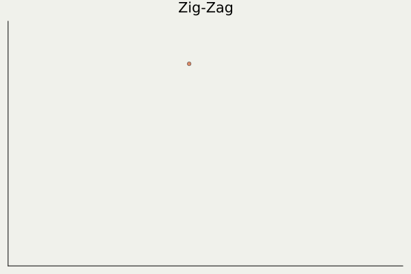

![]()
1 The Zig-Zag Sampler
A continuous-time variant of MCMC algorithms

A Blog Entry on Bayesian Computation by an Applied Mathematician
$$
$$
1.1 Keywords: PDMP (1/2)
PDMP (Piecewise Deterministic1 Markov Process2) (Davis, 1984)
- Mostly deterministic with the exception of random jumps happens at random times
- Continuous-time, instead of discrete-time processes
Plays a complementary role to SDEs / Diffusions
| Property | PDMP | SDE |
|---|---|---|
| Exactly simulatable? | ||
| Subject to discretization errors? | ||
| Driving noise | Poisson | Gauss |
History of PDMP Applications
- First applications: control theory, operations research, etc. (Davis, 1993)
- Second applications: Monte Carlo simulation in material sciences (Peters and de With, 2012)
- Third applications: Bayesian statistics (Bouchard-Côté et al., 2018)
1.2 Keywords: PDMP (2/2)
- We will concentrate on Zig-Zag sampler (Bierkens et al., 2019)
- Other PDMPs: Bouncy sampler (Bouchard-Côté et al., 2018) , Boomerang sampler (Bierkens et al., 2020)

1.4 Review: Metropolis-Hastings (1/2)
MH algorithm works even without p’s normalizing constant. Hence, its ubiquity.
2 The Algorithm
3 Application: Logistic Regression
References

Bierkens, J., Fearnhead, P., and Roberts, G. (2019). The Zig-Zag Process and Super-Efficient Sampling for Bayesian Analysis of Big Data. The Annals of Statistics, 47(3), 1288–1320.
Bierkens, J., Grazzi, S., Kamatani, K., and Roberts, G. O. (2020). The boomerang sampler. Proceedings of the 37th International Conference on Machine Learning, 119, 908–918.
Bouchard-Côté, A., Vollmer, S. J., and Doucet, A. (2018). The bouncy particle sampler: A nonreversible rejection-free markov chain monte carlo method. Journal of the American Statistical Association, 113(522), 855–867.
Davis, M. H. A. (1984). Piecewise-deterministic markov processes: A general class of non-diffusion stochastic models. Journal of the Royal Statistical Society. Series B (Methodological), 46(3), 353–388.
Davis, M. H. A. (1993). Markov models and optimization,Vol. 49. Chapman & Hall.
Grazzi, S. (2020). Piecewise deterministic monte carlo.
Hastings, W. K. (1970). Monte carlo sampling methods using markov chains and their applications. Biometrika, 57(1), 97–109.
Metropolis, N., Rosenbluth, A. W., Rosenbluth, M. N., Teller, A. H., and Teller, E. (1953). Equation of state calculations by fast computing machines. The Journal of Chemical Physics, 21(6), 1087–1092.
Peters, E. A. J. F., and de With, G. (2012). Rejection-free monte carlo sampling for general potentials. Physical Review E, 85(2).
Footnotes
Reuse
Citation
BibTeX citation:
@unpublished{shiba2024,
author = {Shiba, Hirofumi},
title = {Zig-Zag {Sampler}},
date = {2024-09-10},
url = {https://162348.github.io//posts/2024/Slides/ZigZagPoliSci.html},
langid = {en},
abstract = {Zig-Zag sampler, known as an instance of “Continuous-time
MCMC”, is a cutting-edge sampling method that exhibits scalability
and state-of-the-art performance on high-dimensional models
including logistic models etc. This talk includes a brief
introduction to the Zig-Zag sampler and the two important
properties, irreversibility of its dynamics and thinning of Poisson
point processes, followed by a few numerical experiments on logistic
models with large and unbalanced data.}
}
For attribution, please cite this work as:
Shiba, H. (2024, September). Zig-Zag
Sampler. University of Seoul, Gwanak (관악) campus, South
Korea.